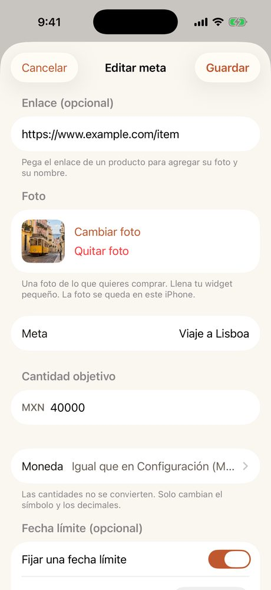
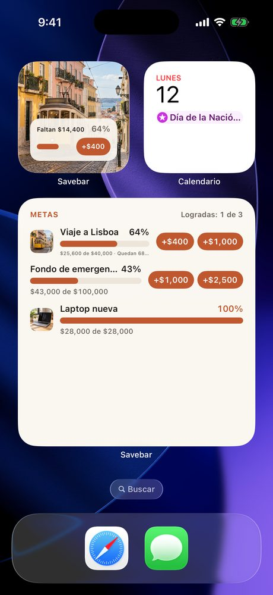

Cómo poner una meta de ahorro en la pantalla de inicio del iPhone
Ahorrar para algo es más fácil cuando lo ves. Un widget pone la barra —cuánto llevas ahorrado y cuánto falta— donde miras muchas veces al día, y te deja añadir dinero con un toque.
Así se configura con Savebar. Una meta y el widget pequeño son gratis.
1. Crea una meta
Abre Savebar y toca +.
Escribe un nombre y una Cantidad objetivo.
Opcional: activa “Fijar una fecha límite” para ver los días que quedan y cuánto ahorrar al día.
Opcional: pega el enlace de un producto en “Enlace”. La foto y el nombre se rellenan desde la página.
2. Elige la cantidad del botón del widget
En “Cantidades del widget”, escribe la cantidad que sueles apartar. El botón del widget la añade con un toque, sin abrir la app.

3. Pon el widget en la pantalla de inicio
Mantén pulsada una zona vacía de la pantalla de inicio hasta que las apps se muevan.
Toca Editar (o +) en la esquina superior y busca “Savebar”.
Elige el tamaño Pequeño y toca Añadir widget.
Cada vez que apartes dinero, toca el botón de cantidad del widget. La barra y el porcentaje avanzan ahí mismo.

El widget más grande de esta imagen, con varias metas, forma parte de Savebar Pro.
¿Quieres más?
Savebar Pro es un pago único, no una suscripción:
Metas ilimitadas
Widgets mediano y grande con varias metas, y hasta dos botones de cantidad por meta
Widgets de la pantalla de bloqueo
Una app para Apple Watch con los mismos botones de cantidad
Preguntas
¿Se conecta con mi banco?No. Las cantidades las añades tú, así que no hay inicio de sesión ni nada que vincular.
¿Cuántas metas puedo crear gratis?Una, con el widget pequeño de la pantalla de inicio. Savebar Pro, un pago único, ofrece metas ilimitadas, widgets mediano y grande con varias metas, widgets de la pantalla de bloqueo y una app para Apple Watch.
¿Puedo añadir una cantidad que no está en el botón?Sí. Abre la meta en la app y toca “+ Añadir” para introducir cualquier cantidad.
¿Cómo elijo qué meta muestra el widget?Mantén pulsado el widget, toca “Editar widget” y elige la meta.